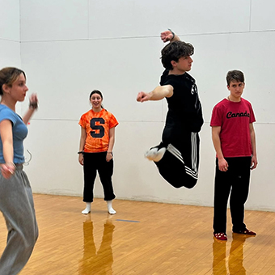

The spring semester is when First Year Players comes alive on stage. After months of preparation and anticipation, our members collaborate to put on a full-scale musical production unlike anything else on campus.
What Happens in the Spring?
-

- Auditions and Casting: First-year students audition for roles both on and off stage, including crew and pit orchestra.
- Rehearsals and Production: The cast, crew, and pit work tirelessly to bring the show to life, guided by upperclass staff mentors.
- The Spring Musical: Each April, FYP produces a beloved musical in SU’s Goldstein Auditorium. Past productions include The Addams Family, Pippin, and Legally Blonde.
- Community and Celebration: The spring is filled with events and traditions that honor the creativity and hard work of everyone involved.


The spring semester represents the heart of First Year Players: first-years stepping into leadership, taking risks, and creating something unforgettable together.